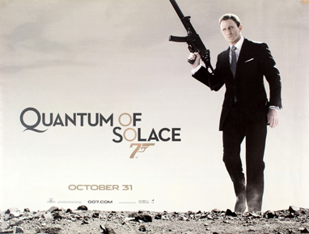
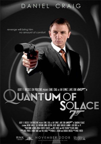
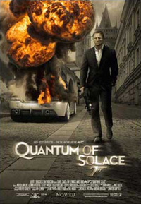
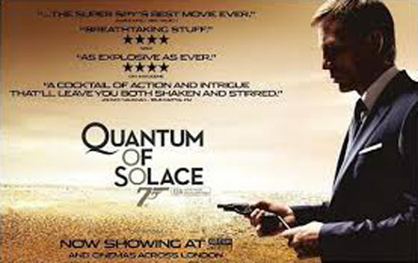
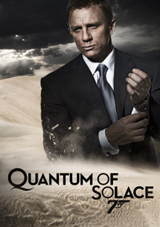
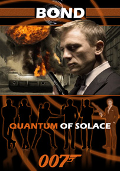
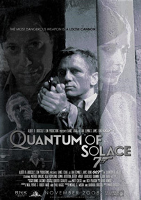

Barbara Broccoli
Paul Haggis
Neal Purvis
Robert Wade
Rick Pearson
Columbia Pictures
MI6 agent Strawberry Fields: She works at the British consulate in Bolivia. Fields, who is merely an office worker as described by M, takes herself seriously and tries to overpower Bond when the pair meet.
James Bond is driving from Lake Garda to Siena, Italy, with the captured Mr. White in the boot of his car. After evading pursuers, Bond delivers White to M, who interrogates him regarding his organisation, Quantum. M's bodyguard, Craig Mitchell, is a double agent; he attacks M, enabling White to escape. Bond chases Mitchell and kills him. Bond and M return to London and search Mitchell's flat, discovering Mitchell had a contact in Haiti, Edmund Slate. Bond learns Slate is a hitman sent to kill Camille Montes at the behest of her lover, environmentalist entrepreneur Dominic Greene. Observing her subsequent meeting with Greene, Bond learns Greene is helping exiled Bolivian General Medrano, who murdered Camille's family, to overthrow his government and become the new president, in exchange for a seemingly barren piece of desert.
After rescuing Camille from Medrano, Bond follows Greene to a performance of Tosca on the outdoor floating stage (Seebühne) at Bregenz, Austria. Meanwhile, the head of the CIA's South American section, Gregg Beam, strikes a non-interference deal with Greene for access to putative stocks of Bolivian oil. Bond infiltrates Quantum's meeting at the opera, identifying members of Quantum's executive board, and a gunfight ensues. A Special Branch bodyguard working for Quantum member Guy Haines is killed by one of Greene's men after Bond throws him off a roof. M assumes Bond killed him, and has Bond's passports and credit cards revoked. Bond heads to Italy and convinces his old ally René Mathis to accompany him to Bolivia. They are greeted by Strawberry Fields, a consular employee who demands Bond return to the UK immediately. Bond seduces her and they attend a fundraising party Greene holds that night. At the party, Bond again rescues Camille from Greene. Leaving, Bond and Camille are pulled over by Bolivian police working for Medrano. They had earlier attacked Mathis and put him in the boot of Bond's car to frame Bond. In the ensuing struggle, Mathis and the cops are killed.
The following day, Bond and Camille survey Quantum's intended land acquisition by air; their plane is shot down by a Bolivian fighter aircraft. They skydive into a sinkhole, and discover Quantum is damming Bolivia's supply of fresh water to create a monopoly. Back in La Paz, Bond meets M and learns Quantum killed Fields by drowning her in crude oil. Bond meets CIA Agent Felix Leiter, who discloses Greene and Medrano will meet in the Atacama Desert to finalise their agreement. Warned by Leiter, he evades the CIA's Special Activities Division when they attempt to kill him.
At an eco hotel in the desert, Greene tells Medrano that now he controls the majority of Bolivia's water supply, Medrano must accept a new contract that makes Greene Planet Bolivia's sole water utility company at significantly higher rates. Bond infiltrates the complex, kills the chief of police for betraying Mathis, and single-handedly assaults the hotel. After killing the security detail, he confronts Greene. Meanwhile, Camille kills Medrano, avenging the murders of her family. The struggle leaves the hotel destroyed by fire. Bond captures Greene and interrogates him about Quantum, leaving him stranded in the desert with only a can of engine oil, wondering if Greene will get thirsty enough to drink it.
Bond travels to Kazan, Russia, where he finds Vesper Lynd's former lover, Yusef Kabira, a member of Quantum who seduces women with valuable connections, and who is indirectly responsible for her death. Bond tells Kabira's latest target, Corrine Veneau, a Canadian Intelligence Agent, of Kabira's true intentions, thus sparing her Vesper's fate. He allows MI6 to arrest Kabira. Outside, M tells Bond that Greene was found dead in the middle of the desert, shot twice and with engine oil in his stomach. M tells Bond she needs him back; he responds that he never left. Walking away, he drops Vesper's necklace in the snow.
Daniel Craig's physical training for his reprise of the role placed extra effort into running and boxing, to spare him the injuries he sustained on his stunts in the first film. Craig felt he was fitter, being less bulky than in the first film. He also practised speedboating and stunt driving. Craig felt Casino Royale was "a walk in the park" compared to Quantum of Solace, which required a different performance from him because Quantum of Solace is a revenge film, not a love story like Casino Royale. While filming in Pinewood, he suffered a gash when kicked in his face, which required eight stitches, and a fingertip was sliced off. He laughed these off, noting they did not delay filming, and joked his finger wound would enable him to have a criminal career (though it had grown back when he made this comment). He also had minor plastic surgery on his face.
Forster chose Olga Kurylenko because, out of the 400 women who auditioned, she seemed the least nervous. When she read the script, she was glad she had no love scene with Craig; she felt it would have distracted viewers from her performance. Kurylenko spent three weeks training to fight with weapons, and she learnt a form of indoor skydiving known as body flying. Kurylenko said she had to do "training non-stop from the morning to the evening" for the action scenes, overcoming her fears with the help of Craig and the stunt team. She was given a DVD box set of Bond films, since the franchise was not easily available to watch in her native Ukraine. Kurylenko found Michelle Yeoh in Tomorrow Never Dies inspiring "because she did the fight scenes by herself." The producers had intended to cast a South American actress in the role. Kurylenko trained with a dialect coach to perform with a Spanish accent. She said that the accent was easy for her because she has "a lot of hispanic friends, from Latin America and Spain, and it's an accent I've always heard". When reflecting on her experience as a Bond girl, she stated she was proudest of overcoming her fears in performing stunts.
In the 2015 Bond film Spectre, Dominic Greene is revealed to have been a member of the titular crime syndicate, of which Quantum is a subsidiary. Mathieu Amalric acknowledged taking the role was an easy decision because, "It's impossible to say to your kids that 'I could have been in a Bond film but I refused.'" Amalric wanted to wear make-up for the role, but Forster explained that he wanted Greene not to look grotesque, but to symbolise the hidden evils in society. Amalric modelled his performance on "the smile of Tony Blair [and] the craziness of Sarkozy," the latter of whom he called "the worst villain we [the French] have ever had … he walks around thinking he's in a Bond film." He later claimed this was not criticism of either politician, but rather an example of how a politician relies on performance instead of a genuine policy to win power. "Sarkozy, is just a better actor than [his presidential opponent] Ségolène Royal - that's all," he explained. Amalric and Forster reconceived the character, who was supposed to have a "special skill" in the script, to someone who uses pure animal instinct when fighting Bond in the climax. Bruno Ganz was also considered for the part, but Forster decided Amalric gave the character a "pitiful" quality.
Forster felt Judi Dench was underused in the previous films and wanted to make her part bigger, having her interact with Bond more because she is "the only woman Bond doesn't see in a sexual context," which Forster found interesting.
Marc Forster found Gemma Arterton a witty actress and selected her from a reported 1,500 candidates. One of the casting directors asked her to audition for the role, having seen her portray Rosaline in Love's Labour's Lost at the Globe Theatre. Arterton said Fields was "not so frolicsome" as other Bond girls, but is instead "fresh and young, not … a femme fatale." and described Fields as a homage to the 1960s Bond girls, comparing her red wig to that of Diana Rigg, who played Tracy Bond in On Her Majesty's Secret Service. Rigg, alongside Honor Blackman, was one of her favourite Bond girls. Arterton had to film her character's death scene first day on the set, where she was completely covered head to toe in non-toxic black paint. Although she found the experience unpleasant, she believes the scene will be an iconic part of the film. The character's full name, which is a reference to the Beatles song "Strawberry Fields Forever", is never actually uttered on screen; when Bond asks her for her name, she replies, "Just Fields." Robert A. Caplen suggests that this is a conscious effort to portray a woman "whose character attributes are neither undermined nor compromised" by her name, even though her name may have sexual overtones reminiscent of earlier Bond girls.
Quantum of Solace was shot in six countries. Second unit filming began in Italy at the Palio di Siena horse race on 16 August 2007, although at that point Forster was unsure how it would fit into the film. Some scenes were filmed also in Maratea and Craco, two small distinctive towns in Basilicata in southern Italy. Other places used for location shooting were Madrid in August 2007; Baja California, Mexico in early 2008, for shots of the aerial battle; Malcesine, Limone sul Garda and Tremosine in Italy during March, and at Talamone during the end of April. The main unit began on 3 January 2008 at Pinewood Studios. The 007 Stage was used for the fight in the art gallery, and an MI6 safehouse hidden within the city's cisterns, while other stages housed Bond's Bolivian hotel suite and the MI6 headquarters. Interior and exterior airport scenes were filmed at Farnborough Airfield and the snowy closing scenes were filmed at the Bruneval Barracks in Aldershot.
Shooting in Panama City began on 7 February 2008 at Howard Air Force Base. The country doubled for Haiti and Bolivia, with the National Institute of Culture of Panama standing in for a hotel in the latter country. A sequence requiring several hundred extras was also shot at nearby Colón. Shooting in Panama was also carried out at Fort Sherman, a former US military base on the Colón coast. Forster was disappointed he could only shoot the boat chase in that harbour, as he had a more spectacular vision for the scene. Officials in the country worked with the locals to "minimise inconvenience" for the cast and crew, and in return hoped the city's exposure in the film would increase tourism. The crew was going to move to Cusco, Peru for ten days of filming on 2 March, but the location was cancelled for budget reasons. Twelve days of filming in Chile began on 24 March at Antofagasta. There was shooting in Cobija, the Paranal Observatory, and other locations in the Atacama Desert. Forster chose the desert and the observatory's ESO Hotel to represent Bond's rigid emotions, and being on the verge of committing a vengeful act as he confronts Greene in the film's climax.
During filming in Sierra Gorda, Chile, the local mayor, Carlos Lopez, staged a protest because he was angry at the filmmakers' portrayal of the Antofagasta Region as part of Bolivia. He was arrested, detained briefly, and put on trial two days later. Eon dismissed his claim that they needed his permission to film in the area. Michael G. Wilson explained that Bolivia was appropriate to the plot, because of the country's history of water problems, and was surprised the two countries disliked each other a century after the War of the Pacific. In a poll by Chilean daily newspaper La Segunda, 75% of its readers disagreed with Lopez's actions, due to the negative image of Chile they felt it presented, and the controversy's potential to put off productions looking to film in the country in the future.
From 4–12 April 2008 the main unit shot on Sienese rooftops. Shooting on the real rooftops turned out to be less expensive than building them at Pinewood. The next four weeks were scheduled for filming the car chase at Lake Garda and Carrara. On 19 April, an Aston Martin employee driving a DBS to the set crashed into the lake. He survived, and was fined £400 for reckless driving. Another accident occurred on 21 April, and two days later, two stuntmen were seriously injured, with one, Greek stuntman Aris Comninos, having to be put in intensive care. Filming of the scenes was temporarily halted so that Italian police could investigate the causes of the accidents. Stunt co-ordinator Gary Powell said the accidents were a testament to the realism of the action. Rumours of a "curse" spread among tabloid media, something which deeply offended Craig, who disliked that they compared Comninos' accident to something like his minor finger injury later on the shoot (also part of the "curse"). Comninos recovered safely from his injury.
For the role Craig trained to be less bulky than in Casino Royale and told Men's Fitness magazine "In fact, I was much fitter for this film compared to Casino Royale - I really had to be - and I was running a hell of a lot more in training, just so I could do these scenes, whereas last time I spent far more time pumping heavy weights to bulk up so I could look big."
Filming took place at the floating opera stage at Bregenz, Austria, from 28 April – 9 May 2008. The sequence in which Bond stalks the villains during a performance of Tosca required 1,500 extras. The production used a large model of an eye, which Forster felt fitted in the Bond style, and the opera itself has parallels to the film. A short driving sequence was filmed at the nearby Feldkirch, Vorarlberg. The crew returned to Italy from 13–17 May to shoot a (planned) car crash at the marble quarry in Carrara, and a recreation of the Palio di Siena at the Piazza del Campo in Siena. 1,000 extras were hired for a scene where Bond emerges from the Fonte Gaia. Originally, he would have emerged from the city's cisterns at Siena Cathedral, but this was thought disrespectful. By June the crew returned to Pinewood for four weeks, where new sets (including the interior of the hotel in the climax) were built. The wrap party was held on 21 June.
Production designer Peter Lamont, a crew member on 18 previous Bond films, retired after Casino Royale. Forster hired Dennis Gassner in his stead, having admired his work on The Truman Show and the films of the Coen brothers. Craig said the film would have "a touch of Ken Adam," while Michael G. Wilson also called Gassner's designs "a postmodern look at modernism." Forster said he felt the early Bond films' design "were ahead of their time" and enjoyed the clashing of an older style with his own because it created a unique look unto itself. Gassner wanted his sets to emphasise Craig's "great angular, textured face and wonderful blue eyes," and totally redesigned the MI6 headquarters because he felt Judi Dench "was a bit tired in the last film, so I thought, let's bring her into a new world."
Louise Frogley replaced Lindy Hemming as costume designer, though Hemming remained as supervisor. Hemming hired Brioni for Bond's suits since her tenure on the series began with 1995's GoldenEye, but Lindsay Pugh, another supervisor, explained their suits were "too relaxed." Tom Ford was hired to tailor "sharper" suits for Craig. Pugh said the costumes aimed towards the 1960s feel, especially for Bond and Fields. Prada provided the dresses for both Bond girls. Jasper Conran designed Camille's ginger bandeau, bronze skirt and gold fish necklace, while Chrome Hearts designed gothic jewellery for Amalric's character, which the actor liked enough to keep after filming. Sophie Harley, who created Vesper Lynd's earrings and Algerian loveknot necklace in Casino Royale, was called upon to create another version of the necklace.






